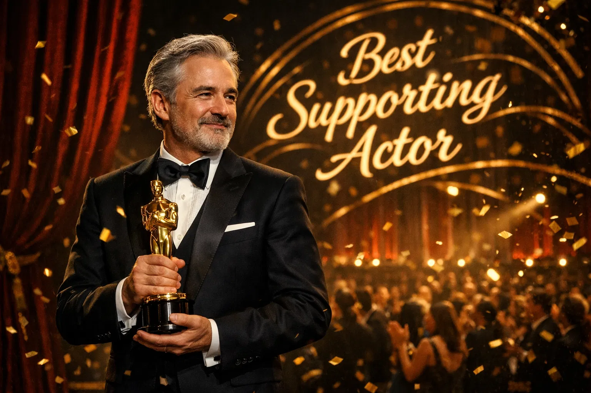
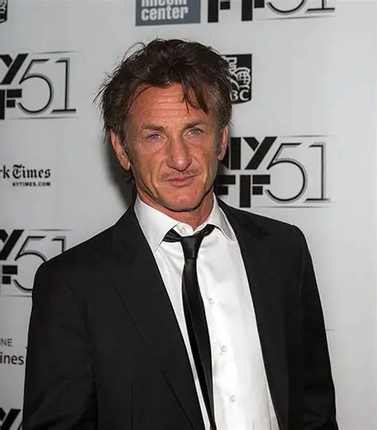
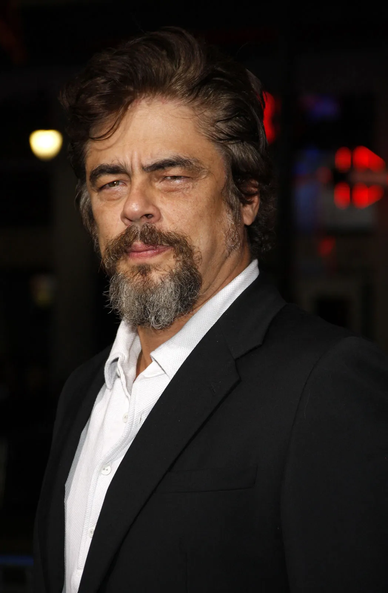
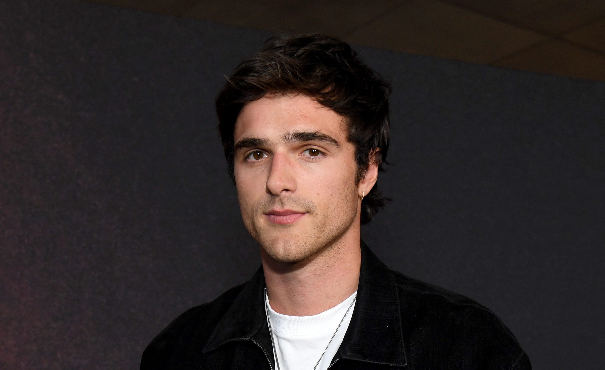
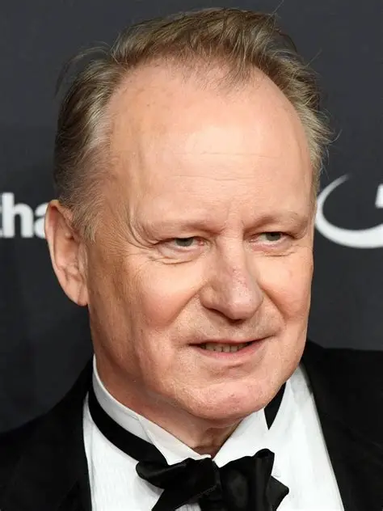
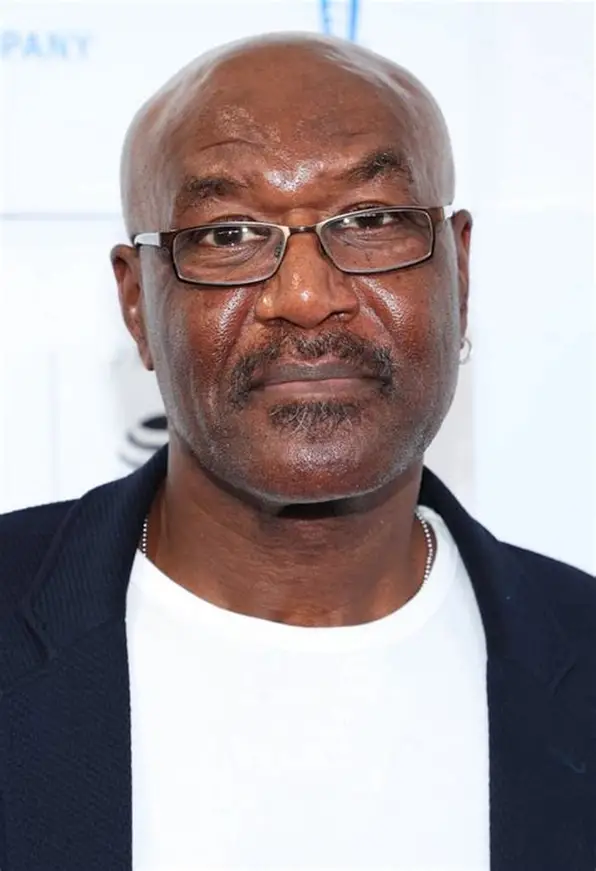

98th Annual Academy Awards
Melhor Ator Coadjuvante
Conheça os candidatos à Premiação do Oscar 2026 por Melhor Ator Coadjuvante.

Vencedor
Sean Penn
Uma Batalha Após a Outra
Penn interpreta um personagem que parece saído de um submundo urbano, com um visual excêntrico e uma energia instável. Sua atuação é física e ruidosa, servindo como um contraponto caótico à seriedade do personagem de DiCaprio.
Críticos que acompanharam as filmagens e as primeiras exibições destacaram que Penn está em seu modo "totalmente desequilibrado", o que em um filme de Paul Thomas Anderson é um elogio. Ele foi elogiado por trazer um perigo imprevisível à tela.

Benicio Del Toro
Uma Batalha Após a Outra
Del Toro traz sua presença estoica e sua voz característica para um papel que exige mistério. Ele atua como uma figura de autoridade ou influência que se move nas sombras da narrativa.
A crítica celebrou a reunião de Del Toro com Anderson (após Vício Inerente). Ele foi notado por sua capacidade de dominar uma cena sem dizer uma única palavra, usando apenas seu olhar pesado para sugerir uma história de vida complexa e perigosa.

Jacob Elordi
Frankenstein
Elordi utiliza sua altura impressionante e sua expressividade para dar uma nova alma ao monstro. Sua atuação foca na melancolia e na busca por humanidade, fugindo da imagem de um monstro sem mente e focando na tragédia do ser abandonado.
Houve muito ceticismo inicial, mas a crítica se surpreendeu com sua entrega física e emocional. Ele foi elogiado por trazer uma "doçura assustadora" ao papel, provando que é capaz de lidar com transformações profundas sob pesada maquiagem e próteses.

Stellan Skarsgård
Valor Sentimental
Skarsgård interpreta um cineasta decadente que tenta se reconectar com as filhas por motivos egoístas. Sua atuação é uma mistura magistral de carisma manipulador e vulnerabilidade patética.
Foi amplamente aclamado como uma escolha de elenco perfeita. Críticos destacaram como ele consegue fazer o público oscilar entre o desprezo e a piedade por seu personagem, servindo como o motor do conflito dramático do filme.

Delroy Lindo
Pecadores
Lindo traz a gravidade e a voz ressonante que o tornaram uma lenda. Sua performance é carregada de autoridade e um conhecimento ancestral do mal que assombra a cidade, funcionando como o guia moral (ou o portador das más notícias) para os irmãos protagonistas.
A crítica frequentemente aponta que Lindo "eleva o nível" de qualquer filme em que esteja. Em Sinners, ele foi elogiado por dar profundidade teológica e emocional ao gênero de horror, transformando cada um de seus monólogos em momentos de pura tensão cinematográfica.